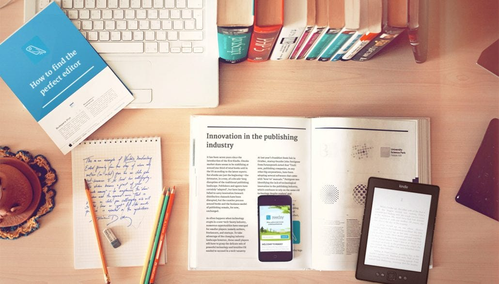

The fundamentals of publishing
Publishing really is collaboration and connection, building networks of people and ideas.


These are the two most important fundamental parts of publishing Collaboration and Connection. These two lead to a wired dense network of people and ideas connected for making useful and impactful cultural changes happen. The medium of publishing could be anything from books to blogs but the fundamentals remain the same.
With the surges of Technology and the birth of products like readers and cheap blogging platform, the industry just forgot these fundamentals because the internal rate of return was improbable by adding more books to publish, increasing the number of assets while the cost of bringing a book into the marketplace was lower and lower due to e-readers, print on demand and marketplace like amazon. Bookshelves spaces were not scarce anymore and book stores started to see their economics disrupted. The negative side of some disruption that changes the distribution platform of a market is that they very often don't integrate existing businesses that use the old platform of distribution and sometimes or half the time it is those disrupted businesses that refuse to onboard themselves into the new coming platform. The Music and the industry experienced this same kind of disruption with the iPod and the kindle.
At book dojo were are at the same place now that these two disruptive products were when they started but we would integrate and create more without destroying jobs already created by the past revolutions. We do it by creating a new market, with new genres and new categories that integrate globally and completely past markets, genres, and categories and make them better and more profitable for each participant.
This is a huge goal to achieve as a mail-only startup but we are glad that we can ly on our skills and technology but the most important factor of our success is that our fan and supporter helps us spread the message and by doing them they are investing in Book Dojo Marketing budget. Every participant of a profitable investment must take its stake of profit.
At Book Dojo, everybody will.
Know more about book Dojo, the mail-only startup here